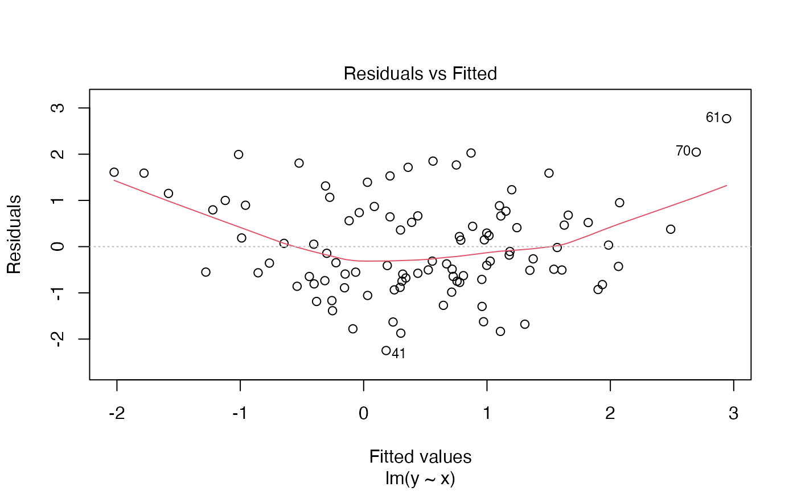
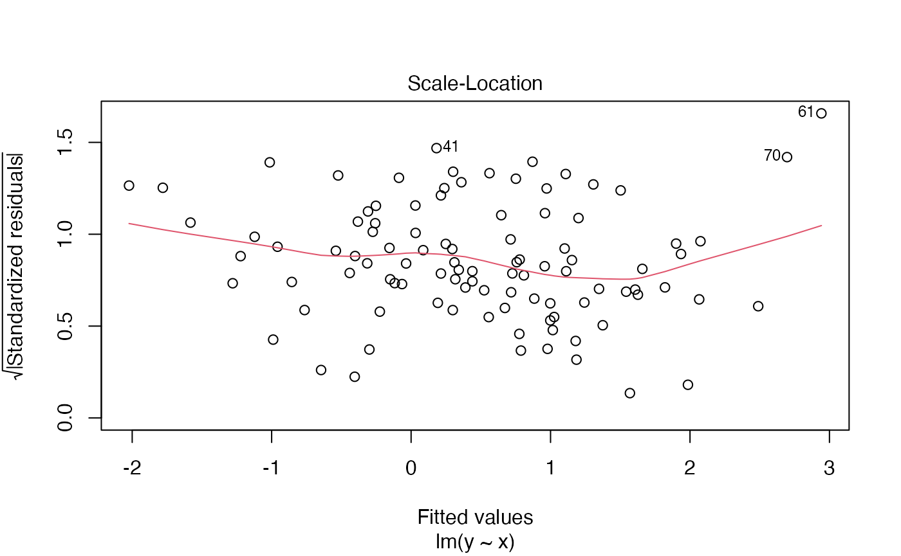
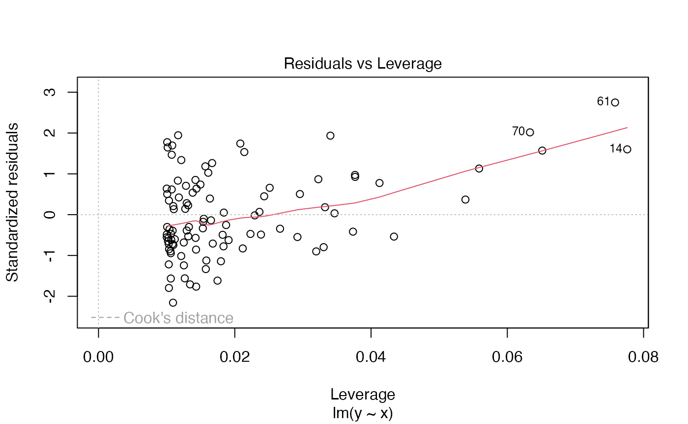

Introduction
For example, you can make enlarge-able plots:
Graphical relationship
library(rmdpartials)
library(ggplot2)
x <- rnorm(100)
y <- x + rnorm(100) + 0.5 * x^2
curve <- ggplot(mapping = aes(x, y)) + geom_point()
enlarge_plot(curve, large_plot = curve + theme_classic(base_size = 20), plot_name = "myplot")Regression
reg <- lm(y ~ x)
regression_diagnostics(reg)| x | |
|---|---|
| (Intercept) | 0.3592409 |
| x | 1.0755503 |
Values vs. fitted values.
Diagnostics (click to show)



Debug
Learn about environments in partials.
Debug
Working directory
## [1] "/Users/rubenarslan/research/rmdpartials/vignettes"needs_preview()
## [1] FALSEis_interactive()
## [1] FALSEKnitr Output.dir
## [1] "/Users/rubenarslan/research/rmdpartials/vignettes"Child mode
## [1] TRUEViewer null
## [1] TRUEIn tmp dir
## [1] FALSEknitr.in.progress
## [1] TRUErstudio.notebook.executing
## NULLTESTTHAT_interactive
## [1] ""TESTTHAT
## [1] ""interactive
## [1] FALSEobjects in this environment
## [1] "is_interactive" "needs_preview"knitr::opts_knit
## $progress
## [1] FALSE
##
## $verbose
## [1] FALSE
##
## $eval.after
## [1] "fig.cap" "fig.scap" "fig.alt"
##
## $base.dir
## NULL
##
## $base.url
## NULL
##
## $root.dir
## NULL
##
## $child.path
## [1] ""
##
## $upload.fun
## function (x)
## x
## <bytecode: 0x144612760>
## <environment: namespace:base>
##
## $global.device
## [1] FALSE
##
## $global.par
## [1] FALSE
##
## $concordance
## [1] FALSE
##
## $documentation
## [1] 1
##
## $self.contained
## [1] TRUE
##
## $unnamed.chunk.label
## [1] "rmdpartial"
##
## $highr.opts
## NULL
##
## $label.prefix
## table
## "tab:"
##
## $latex.tilde
## NULL
##
## $out.format
## [1] "markdown"
##
## $child
## [1] TRUE
##
## $parent
## [1] FALSE
##
## $tangle
## [1] FALSE
##
## $aliases
## NULL
##
## $header
## highlight tikz framed
## "" "" ""
##
## $global.pars
## NULL
##
## $rmarkdown.pandoc.from
## [1] "markdown+autolink_bare_uris+tex_math_single_backslash"
##
## $rmarkdown.pandoc.to
## [1] "html"
##
## $rmarkdown.pandoc.args
## [1] "--standalone"
## [2] "--section-divs"
## [3] "--template"
## [4] "/var/folders/tr/lgwjmdgd72bckr1hj5gd_7640000gq/T//Rtmp3ZPimv/pkgdown-rmd-template-a206225e4a11.html"
## [5] "--highlight-style"
## [6] "pygments"
##
## $rmarkdown.pandoc.id_prefix
## [1] ""
##
## $rmarkdown.keep_md
## [1] FALSE
##
## $rmarkdown.df_print
## [1] "default"
##
## $rmarkdown.version
## [1] 2
##
## $rmarkdown.runtime
## [1] "static"
##
## $output.dir
## [1] "/Users/rubenarslan/research/rmdpartials/vignettes"knitr::opts_chunk
## $eval
## [1] TRUE
##
## $echo
## [1] FALSE
##
## $results
## [1] "markup"
##
## $tidy
## [1] FALSE
##
## $tidy.opts
## NULL
##
## $collapse
## [1] FALSE
##
## $prompt
## [1] FALSE
##
## $comment
## [1] "##"
##
## $highlight
## [1] TRUE
##
## $size
## [1] "normalsize"
##
## $background
## [1] "#F7F7F7"
##
## $strip.white
## [1] TRUE
##
## $cache
## [1] FALSE
##
## $cache.path
## [1] "rmdpartials_cache/html/f080a7cff6_"
##
## $cache.vars
## NULL
##
## $cache.lazy
## [1] TRUE
##
## $dependson
## NULL
##
## $autodep
## [1] FALSE
##
## $cache.rebuild
## [1] FALSE
##
## $fig.keep
## [1] "high"
##
## $fig.show
## [1] "asis"
##
## $fig.align
## [1] "default"
##
## $fig.path
## [1] "/Users/rubenarslan/research/rmdpartials/docs/articles/rmdpartials_files/figure-html/f080a7cff6_"
##
## $dev
## [1] "ragg_png"
##
## $dev.args
## $dev.args$bg
## [1] NA
##
##
## $dpi
## [1] 96
##
## $fig.ext
## [1] "png"
##
## $fig.width
## [1] 7.291667
##
## $fig.height
## [1] 4.506593
##
## $fig.env
## [1] "figure"
##
## $fig.cap
## NULL
##
## $fig.scap
## NULL
##
## $fig.lp
## [1] "fig:"
##
## $fig.subcap
## NULL
##
## $fig.pos
## [1] ""
##
## $out.width
## NULL
##
## $out.height
## NULL
##
## $out.extra
## NULL
##
## $fig.retina
## [1] 2
##
## $external
## [1] TRUE
##
## $sanitize
## [1] FALSE
##
## $interval
## [1] 1
##
## $aniopts
## [1] "controls,loop"
##
## $warning
## [1] TRUE
##
## $error
## [1] FALSE
##
## $message
## [1] TRUE
##
## $render
## NULL
##
## $ref.label
## NULL
##
## $child
## NULL
##
## $engine
## [1] "R"
##
## $split
## [1] FALSE
##
## $include
## [1] TRUE
##
## $purl
## [1] TRUE
##
## $other.parameters
## list()
##
## $fig.class
## [1] "r-plt"Sys.getenv()
## __CF_USER_TEXT_ENCODING
## 0x1F7:0x0:0x0
## __CFBundleIdentifier com.todesktop.230313mzl4w4u92
## _R_CHECK_LENGTH_1_LOGIC2_
## TRUE
## _ZO_DOCTOR 0
## ANDROID_HOME /Users/rubenarslan/Library/Android/sdk
## BIBINPUTS ::/Users/rubenarslan/research/rmdpartials/vignettes:/Library/Frameworks/R.framework/Versions/4.5-arm64/Resources/share/texmf/tex/latex
## BSTINPUTS :/Users/rubenarslan/research/rmdpartials/vignettes:/Library/Frameworks/R.framework/Versions/4.5-arm64/Resources/share/texmf/bibtex/bst
## BUN_INSTALL_CACHE_DIR /var/folders/tr/lgwjmdgd72bckr1hj5gd_7640000gq/T/cursor-sandbox-cache/214f8b88d7baf2108bff6373a58e2bf3/bun
## BUNDLE_PATH /var/folders/tr/lgwjmdgd72bckr1hj5gd_7640000gq/T/cursor-sandbox-cache/214f8b88d7baf2108bff6373a58e2bf3/bundle
## CALLR_IS_RUNNING true
## CARGO_TARGET_DIR /var/folders/tr/lgwjmdgd72bckr1hj5gd_7640000gq/T/cursor-sandbox-cache/214f8b88d7baf2108bff6373a58e2bf3/cargo-target
## CCACHE_DIR /var/folders/tr/lgwjmdgd72bckr1hj5gd_7640000gq/T/cursor-sandbox-cache/214f8b88d7baf2108bff6373a58e2bf3/ccache
## CI 1
## CLICOLOR 1
## COMMAND_MODE unix2003
## COMPOSER_HOME /var/folders/tr/lgwjmdgd72bckr1hj5gd_7640000gq/T/cursor-sandbox-cache/214f8b88d7baf2108bff6373a58e2bf3/composer
## CONDA_PKGS_DIRS /var/folders/tr/lgwjmdgd72bckr1hj5gd_7640000gq/T/cursor-sandbox-cache/214f8b88d7baf2108bff6373a58e2bf3/conda
## CP_HOME_DIR /var/folders/tr/lgwjmdgd72bckr1hj5gd_7640000gq/T/cursor-sandbox-cache/214f8b88d7baf2108bff6373a58e2bf3/cocoapods
## CURSOR_AGENT 1
## CURSOR_EXTENSION_HOST_ROLE
## agent-exec
## CURSOR_TRACE_ID 5beffc6b9d2c4272b5b84a0ba00feae5
## CYGWIN nodosfilewarning
## CYPRESS_CACHE_FOLDER /var/folders/tr/lgwjmdgd72bckr1hj5gd_7640000gq/T/cursor-sandbox-cache/214f8b88d7baf2108bff6373a58e2bf3/cypress
## DISPLAY /private/tmp/com.apple.launchd.kxr3jnq73y/org.xquartz:0
## DYLD_FALLBACK_LIBRARY_PATH
## /Library/Frameworks/R.framework/Versions/4.5-arm64/Resources/lib:/Library/Java/JavaVirtualMachines/jdk-11.0.18+10/Contents/Home/lib/server
## EDITOR vi
## ELECTRON_RUN_AS_NODE 1
## FORCE_COLOR 0
## GEM_SPEC_CACHE /var/folders/tr/lgwjmdgd72bckr1hj5gd_7640000gq/T/cursor-sandbox-cache/214f8b88d7baf2108bff6373a58e2bf3/gem-specs
## GIT_ASKPASS /Users/rubenarslan/Library/R/arm64/4.5/library/askpass/mac-askpass
## GOCACHE /var/folders/tr/lgwjmdgd72bckr1hj5gd_7640000gq/T/cursor-sandbox-cache/214f8b88d7baf2108bff6373a58e2bf3/go-build
## GOMODCACHE /var/folders/tr/lgwjmdgd72bckr1hj5gd_7640000gq/T/cursor-sandbox-cache/214f8b88d7baf2108bff6373a58e2bf3/go-mod
## GRADLE_USER_HOME /var/folders/tr/lgwjmdgd72bckr1hj5gd_7640000gq/T/cursor-sandbox-cache/214f8b88d7baf2108bff6373a58e2bf3/gradle
## HOME /Users/rubenarslan
## HOMEBREW_CACHE /var/folders/tr/lgwjmdgd72bckr1hj5gd_7640000gq/T/cursor-sandbox-cache/214f8b88d7baf2108bff6373a58e2bf3/homebrew
## HOMEBREW_CELLAR /opt/homebrew/Cellar
## HOMEBREW_PREFIX /opt/homebrew
## HOMEBREW_REPOSITORY /opt/homebrew
## IN_PKGDOWN true
## INFOPATH /opt/homebrew/share/info:/opt/homebrew/share/info:
## LANG en_US.UTF-8
## LANGUAGE en-GB
## LC_ALL en_US.UTF-8
## LN_S ln -s
## LOGNAME rubenarslan
## MAKE make
## MallocNanoZone 0
## NO_COLOR 1
## NPM_CONFIG_CACHE /var/folders/tr/lgwjmdgd72bckr1hj5gd_7640000gq/T/cursor-sandbox-cache/214f8b88d7baf2108bff6373a58e2bf3/npm
## npm_config_devdir /var/folders/tr/lgwjmdgd72bckr1hj5gd_7640000gq/T/cursor-sandbox-cache/214f8b88d7baf2108bff6373a58e2bf3/node-gyp
## NUGET_PACKAGES /var/folders/tr/lgwjmdgd72bckr1hj5gd_7640000gq/T/cursor-sandbox-cache/214f8b88d7baf2108bff6373a58e2bf3/nuget
## NX_CACHE_DIRECTORY /var/folders/tr/lgwjmdgd72bckr1hj5gd_7640000gq/T/cursor-sandbox-cache/214f8b88d7baf2108bff6373a58e2bf3/nx
## PAGER /usr/bin/less
## PATH /opt/homebrew/bin:/opt/homebrew/sbin:/Applications/arx-3.6.0.app/Contents/bin:/Library/TeX/Root/bin/x86_64-darwin/:/usr/local/bin:/opt/local/bin:/opt/local/sbin:/usr/bin:/bin:/usr/sbin:/sbin:/opt/X11/bin:/Users/rubenarslan/Library/Android/sdk/tools:/Users/rubenarslan/Library/Android/sdk/platform-tools:/Users/rubenarslan/.local/bin
## PIP_CACHE_DIR /var/folders/tr/lgwjmdgd72bckr1hj5gd_7640000gq/T/cursor-sandbox-cache/214f8b88d7baf2108bff6373a58e2bf3/pip
## PLAYWRIGHT_BROWSERS_PATH
## /var/folders/tr/lgwjmdgd72bckr1hj5gd_7640000gq/T/cursor-sandbox-cache/214f8b88d7baf2108bff6373a58e2bf3/playwright
## PNPM_STORE_PATH /var/folders/tr/lgwjmdgd72bckr1hj5gd_7640000gq/T/cursor-sandbox-cache/214f8b88d7baf2108bff6373a58e2bf3/pnpm-store
## POETRY_CACHE_DIR /var/folders/tr/lgwjmdgd72bckr1hj5gd_7640000gq/T/cursor-sandbox-cache/214f8b88d7baf2108bff6373a58e2bf3/poetry
## PROCESSX_PSa1ae48c711a0_1771674431
## YES
## PROCESSX_PSa2067b81c61e_1771674438
## YES
## PUPPETEER_CACHE_DIR /var/folders/tr/lgwjmdgd72bckr1hj5gd_7640000gq/T/cursor-sandbox-cache/214f8b88d7baf2108bff6373a58e2bf3/puppeteer
## PWD /Users/rubenarslan/research/rmdpartials
## R_ARCH
## R_BROWSER false
## R_BZIPCMD /usr/bin/bzip2
## R_CLI_NUM_COLORS 256
## R_DOC_DIR /Library/Frameworks/R.framework/Versions/4.5-arm64/Resources/doc
## R_GZIPCMD /usr/bin/gzip
## R_HOME /Library/Frameworks/R.framework/Versions/4.5-arm64/Resources
## R_INCLUDE_DIR /Library/Frameworks/R.framework/Versions/4.5-arm64/Resources/include
## R_LIBS_SITE /Library/Frameworks/R.framework/Versions/4.5-arm64/Resources/site-library
## R_LIBS_USER /Users/rubenarslan/Library/R/arm64/4.5/library
## R_MAX_VSIZE 16000000000
## R_PAPERSIZE a4
## R_PAPERSIZE_USER a4
## R_PDFVIEWER false
## R_PLATFORM aarch64-apple-darwin20
## R_PRINTCMD lpr
## R_QPDF /Library/Frameworks/R.framework/Versions/4.5-arm64/Resources/bin/qpdf
## R_RD4PDF times,inconsolata,hyper
## R_SESSION_TMPDIR /var/folders/tr/lgwjmdgd72bckr1hj5gd_7640000gq/T//Rtmpk94Rf8
## R_SHARE_DIR /Library/Frameworks/R.framework/Versions/4.5-arm64/Resources/share
## R_STRIP_SHARED_LIB strip -x
## R_STRIP_STATIC_LIB strip -S
## R_TESTS
## R_TEXI2DVICMD /opt/R/arm64/bin/texi2dvi
## R_UNZIPCMD /usr/bin/unzip
## R_ZIPCMD /usr/bin/zip
## RENV_PATHS_ROOT /Library/Frameworks/renv
## SED /usr/bin/sed
## SHELL /bin/bash
## SHLVL 2
## SSH_ASKPASS /Users/rubenarslan/Library/R/arm64/4.5/library/askpass/mac-askpass
## SSH_AUTH_SOCK /private/tmp/com.apple.launchd.vOxIKmRWXY/Listeners
## TAR /usr/bin/tar
## TERM dumb
## TEXINPUTS :/Users/rubenarslan/research/rmdpartials/vignettes:/Library/Frameworks/R.framework/Versions/4.5-arm64/Resources/share/texmf/tex/latex
## TMPDIR /var/folders/tr/lgwjmdgd72bckr1hj5gd_7640000gq/T/
## TURBO_CACHE_DIR /var/folders/tr/lgwjmdgd72bckr1hj5gd_7640000gq/T/cursor-sandbox-cache/214f8b88d7baf2108bff6373a58e2bf3/turbo
## TWITTER_PAT /Users/rubenarslan/.rtweet_token4.rds
## USER rubenarslan
## UV_CACHE_DIR /var/folders/tr/lgwjmdgd72bckr1hj5gd_7640000gq/T/cursor-sandbox-cache/214f8b88d7baf2108bff6373a58e2bf3/uv
## VSCODE_CODE_CACHE_PATH
## /Users/rubenarslan/Library/Application
## Support/Cursor/CachedData/7b98dcb824ea96c9c62362a5e80dbf0d1aae4770
## VSCODE_CRASH_REPORTER_PROCESS_TYPE
## extensionHost
## VSCODE_CWD /
## VSCODE_ESM_ENTRYPOINT vs/workbench/api/node/extensionHostProcess
## VSCODE_HANDLES_UNCAUGHT_ERRORS
## true
## VSCODE_IPC_HOOK /Users/rubenarslan/Library/Application
## Support/Cursor/2.5.-main.sock
## VSCODE_NLS_CONFIG {"userLocale":"en-gb","osLocale":"en-de","resolvedLanguage":"en","defaultMessagesFile":"/Applications/Cursor.app/Contents/Resources/app/out/nls.messages.json","locale":"en-gb","availableLanguages":{}}
## VSCODE_PID 94585
## VSCODE_PROCESS_TITLE extension-host (agent-exec) [8-47]
## XPC_FLAGS 0x0
## XPC_SERVICE_NAME 0
## YARN_CACHE_FOLDER /var/folders/tr/lgwjmdgd72bckr1hj5gd_7640000gq/T/cursor-sandbox-cache/214f8b88d7baf2108bff6373a58e2bf3/yarnoptions()
## $add.smooth
## [1] TRUE
##
## $bitmapType
## [1] "quartz"
##
## $browser
## [1] "false"
##
## $browserNLdisabled
## [1] FALSE
##
## $callr.condition_handler_cli_message
## function (msg)
## {
## custom_handler <- getOption("cli.default_handler")
## if (is.function(custom_handler)) {
## custom_handler(msg)
## }
## else {
## cli_server_default(msg)
## }
## }
## <bytecode: 0x1072967d0>
## <environment: namespace:cli>
##
## $callr.rprofile_loaded
## [1] TRUE
##
## $catch.script.errors
## [1] FALSE
##
## $CBoundsCheck
## [1] FALSE
##
## $check.bounds
## [1] FALSE
##
## $citation.bibtex.max
## [1] 1
##
## $continue
## [1] "+ "
##
## $contrasts
## unordered ordered
## "contr.treatment" "contr.poly"
##
## $defaultPackages
## [1] "datasets" "utils" "grDevices" "graphics" "stats" "methods"
##
## $demo.ask
## [1] "default"
##
## $deparse.cutoff
## [1] 60
##
## $device
## function (width = 7, height = 7, ...)
## {
## grDevices::pdf(NULL, width, height, ...)
## }
## <bytecode: 0x144677d88>
## <environment: namespace:knitr>
##
## $device.ask.default
## [1] FALSE
##
## $digits
## [1] 7
##
## $dplyr.show_progress
## [1] TRUE
##
## $dvipscmd
## [1] "dvips"
##
## $echo
## [1] FALSE
##
## $editor
## [1] "vi"
##
## $encoding
## [1] "native.enc"
##
## $error
## (function ()
## invokeRestart("abort"))()
##
## $example.ask
## [1] "default"
##
## $expressions
## [1] 5000
##
## $help.search.types
## [1] "vignette" "demo" "help"
##
## $help.try.all.packages
## [1] FALSE
##
## $htmltools.preserve.raw
## [1] TRUE
##
## $HTTPUserAgent
## [1] "R (4.5.1 aarch64-apple-darwin20 aarch64 darwin20)"
##
## $install.packages.compile.from.source
## [1] "interactive"
##
## $internet.info
## [1] 2
##
## $keep.parse.data
## [1] TRUE
##
## $keep.parse.data.pkgs
## [1] FALSE
##
## $keep.source
## [1] FALSE
##
## $keep.source.pkgs
## [1] FALSE
##
## $knitr.duplicate.label
## [1] "allow"
##
## $knitr.graphics.rel_path
## [1] FALSE
##
## $knitr.in.progress
## [1] TRUE
##
## $locatorBell
## [1] TRUE
##
## $mailer
## [1] "mailto"
##
## $matprod
## [1] "default"
##
## $max.contour.segments
## [1] 25000
##
## $max.print
## [1] 99999
##
## $menu.graphics
## [1] TRUE
##
## $na.action
## [1] "na.omit"
##
## $nwarnings
## [1] 50
##
## $OutDec
## [1] "."
##
## $pager
## [1] "/Library/Frameworks/R.framework/Versions/4.5-arm64/Resources/bin/pager"
##
## $papersize
## [1] "a4"
##
## $PCRE_limit_recursion
## [1] NA
##
## $PCRE_study
## [1] FALSE
##
## $PCRE_use_JIT
## [1] TRUE
##
## $pdfviewer
## [1] "false"
##
## $pkgType
## [1] "both"
##
## $printcmd
## [1] "lpr"
##
## $prompt
## [1] "> "
##
## $repos
## CRAN
## "https://cloud.r-project.org"
##
## $rl_word_breaks
## [1] " \t\n\"\\'`><=%;,|&{()}"
##
## $rlang_trace_top_env
## <environment: R_GlobalEnv>
##
## $scipen
## [1] 0
##
## $show.coef.Pvalues
## [1] TRUE
##
## $show.error.messages
## [1] TRUE
##
## $show.signif.stars
## [1] TRUE
##
## $showErrorCalls
## [1] TRUE
##
## $showNCalls
## [1] 50
##
## $showWarnCalls
## [1] FALSE
##
## $str
## $str$strict.width
## [1] "no"
##
## $str$digits.d
## [1] 3
##
## $str$vec.len
## [1] 4
##
## $str$list.len
## [1] 99
##
## $str$deparse.lines
## NULL
##
## $str$drop.deparse.attr
## [1] TRUE
##
## $str$formatNum
## function (x, ...)
## format(x, trim = TRUE, drop0trailing = TRUE, ...)
## <environment: 0x144218190>
##
##
## $str.dendrogram.last
## [1] "`"
##
## $texi2dvi
## [1] "/opt/R/arm64/bin/texi2dvi"
##
## $tikzMetricsDictionary
## [1] "rmdpartials-tikzDictionary"
##
## $timeout
## [1] 60
##
## $try.outFile
## A connection with
## description ""
## class "file"
## mode "w+b"
## text "binary"
## opened "opened"
## can read "yes"
## can write "yes"
##
## $ts.eps
## [1] 1e-05
##
## $ts.S.compat
## [1] FALSE
##
## $unzip
## [1] "/usr/bin/unzip"
##
## $useFancyQuotes
## [1] FALSE
##
## $verbose
## [1] FALSE
##
## $warn
## [1] 0
##
## $warning.length
## [1] 1000
##
## $warnPartialMatchArgs
## [1] FALSE
##
## $warnPartialMatchAttr
## [1] FALSE
##
## $warnPartialMatchDollar
## [1] FALSE
##
## $width
## [1] 80